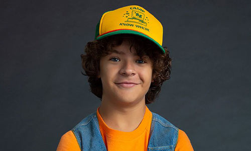
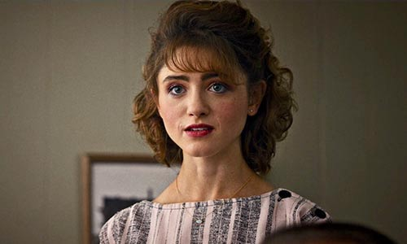
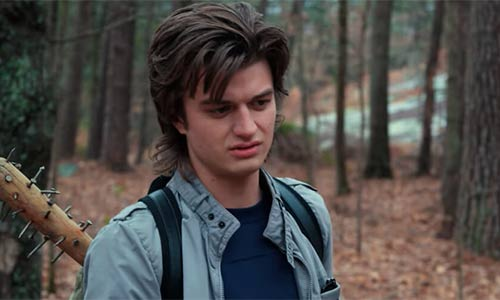
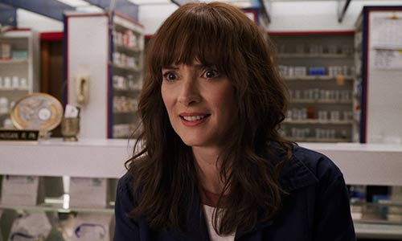
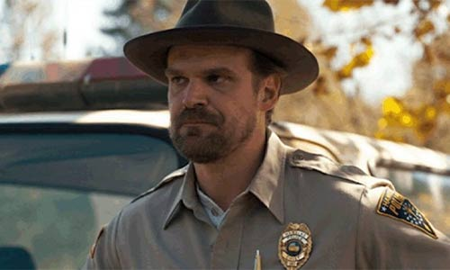
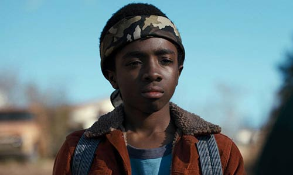
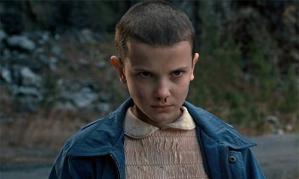
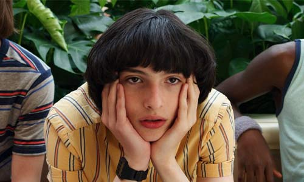
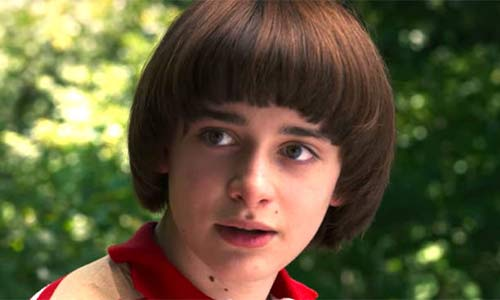

Meet the characters
-

Dustin Henderson,
portrayed by Gaten Matarazzo, is a major protagonist in the first three seasons of Stranger Things. He is best friends with Mike Wheeler, Lucas Sinclair , Eleven, Will Byers, and Max Mayfield. In 1983, when Dustin's friend, Will went missing, Dustin and the rest of his friends, Mike and Lucas went out to look for him, only to find a mysterious girl named Eleven who had telekinetic powers. Dustin had a neutral opinion of Eleven as she helped them look for Will, but he became good friends with her after she saved him and Mike from being killed by their school bullies. Dustin would continue to help his friends find Will and fight against a Demogorgon until it was killed by Eleven. In the end, Dustin and his friends were reunited with Will where they celebrated Christmas together.
-

Nancy Wheeler
Wheeler, portrayed by starring cast member Natalia Dyer, is one of the deuteragonists of Stranger Things. At first, concerned with simple teenage high school issues, her world is turned upside down when her best friend Barbara Holland vanishes, encouraging her to seek out the truth. Still grieving for the death of her best friend, Nancy's relationship with Steve Harrington fell apart, eventually causing the two to break up. Later, Nancy and Jonathan decided to take on a journey on themselves to expose Hawkins National Laboratory as a threat. Eventually, she helps Jonathan and his mother in removing Will Byers from the Mind Flayer. A month later, Nancy officially started a romantic relationship with Jonathan.
-

Steve Harrington
portrayed by Joe Keery, is a major protagonist of Stranger Things, having a recurring role in season one before being upgraded to a major role as of season 2. A student at Hawkins High School, he was best friends with Tommy H. and Carol Perkins and the boyfriend of Nancy Wheeler. When Nancy's best friend, Barbara Holland, disappeared, she became distant and Steve thought she was cheating with Jonathan Byers. Following a few ignorant actions, Steve had a change of heart, told his friends off, and set out to make things right. By coincidence, he ended up heroically saving the day and reconciled with his girlfriend. In 1984, following a falling-out with Nancy, Steve became a proper ally to the main party, especially Dustin, with whom he formed an unlikely friendship. He became a sort of authority figure for the party and solidified himself into becoming a major player in the battle against the Mind Flayer.
-

Joyce Byers
portrayed by Winona Ryder, is one of the three tritagonists (alongside Dustin Henderson and Lucas Sinclair) of Stranger Things. The financially poor single mother of Will and Jonathan Byers, Joyce works as a retail clerk and relies on help from her eldest to make ends meet. After Will mysteriously disappeared, Joyce was certain that he was communicating with her through the lights in her house. Despite everyone treating her as if she was having a mental breakdown, Joyce refused to believe that Will was dead, even after his alleged corpse was found. Through co-operation with her friend and local police chief Jim Hopper, Will’s friends, and Jonathan, she eventually uncovered the circumstances of her son’s disappearance and entered the Upside Down to rescue him.
-

James Hopper
portrayed by David Harbour, is the deuteragonist of Stranger Things. Hopper was Chief of Police in the small, sleepy town of Hawkins, Indiana, where he used to live out a carefree existence - yet haunted by a troubled past. After an old friend, Joyce Byers, reported that her son, Will, had disappeared mysteriously, Hopper's life became infinitely more complicated. He begins to realize Will's disappearance was caused through an experiment at Hawkins National Laboratory and helps Joyce find her son through an alternate dimension called the Upside Down where they are able to bring him home safe and sound.
-

Lucas Sinclair
portrayed by Caleb McLaughlin is one of the three tritagonists (alongside Dustin Henderson and Joyce Byers) of Stranger Things. He is best friends with Mike Wheeler, Dustin Henderson, Will Byers, Eleven and Max Mayfield. In 1983, Lucas's friend, Will mysteriously vanished so Lucas and the rest of his friends, Mike and Dustin went out to look for him, only to meet a girl named Eleven who had telekinetic powers. Lucas was wary of Eleven and found her weird and hardly believed in supernatural circumstances of Wills disappearance. However, when Lucas realized that Eleven was trying to protect him and his friends from the dangers of Hawkins National Laboratory and the Upside Down, his opinion of her changed and he became good friends with her. Lucas continued to help his friends and battle the Demogorgon until it was killed by Eleven. In the end, Lucas was reunited with Will and celebrated Christmas with his friends.
-

Jane Hopper
(born Jane Ives), better known as Eleven, is one of the main protagonists of Stranger Things. Her character is portrayed by Millie Bobby Brown. Eleven was kidnapped and raised in Hawkins National Laboratory, where she was experimented on for her inherited psychokinetic abilities. After escaping the lab, she was found by Mike, Lucas, and Dustin. Upon discovering her abilities, Mike believed that she could help find Will, their missing friend. During their time together, she and Mike formed a strong bond and quickly grew to like each other. It was ultimately revealed that, in a lab experiment, she made contact with a creature from another dimension, accidentally opening an inter-dimensional gateway. In an attempt to protect her friends, Eleven eventually faced and destroyed this monster in a showdown at Hawkins Middle School, mysteriously vanishing in the process.
-

Mike Wheeler
portrayed by Finn Wolfhard, is one of the main protagonists of Stranger Things. When Mikes best friend, Will Byers, mysteriously went missing, he and his other friends, Lucas and Dustin, made it their mission to find him. However, while searching for Will, they stumbled upon an escaped girl named Eleven instead. Mike soon discovered that she knew something about Will's disappearance and enlisted her help in finding him. During their time together, Mike and Eleven formed a strong bond and quickly grew to like each other. Once Will was found, Mike was happy that he had returned home safely; however, he was greatly devastated by Eleven's sacrifice to defeat the Demogorgon.
-

William Byers
portrayed by Noah Schnapp, is the tetartagonist of Stranger Things. Will is the son of Lonnie and Joyce Byers and the younger brother of Jonathan Byers. He is best friends with Mike Wheeler, Lucas Sinclair, Dustin Henderson, Eleven, and Max Mayfield. On the night of November 6th, 1983, Will was abducted by the Demogorgon and taken into an alternate dimension dubbed the Upside Down. For a week, Will evaded the creature while his family and friends desperately searched for him. Although he was eventually rescued and returned to normal life, his time in the Upside Down left him with a mysterious connection to the alternate realm.